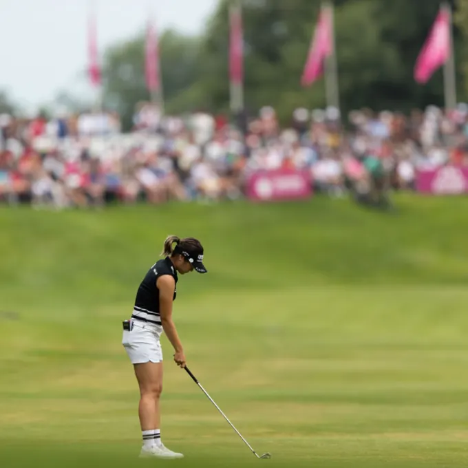
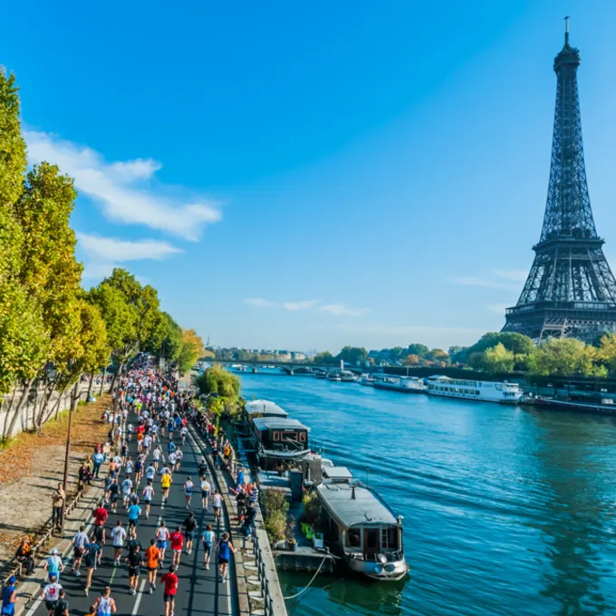
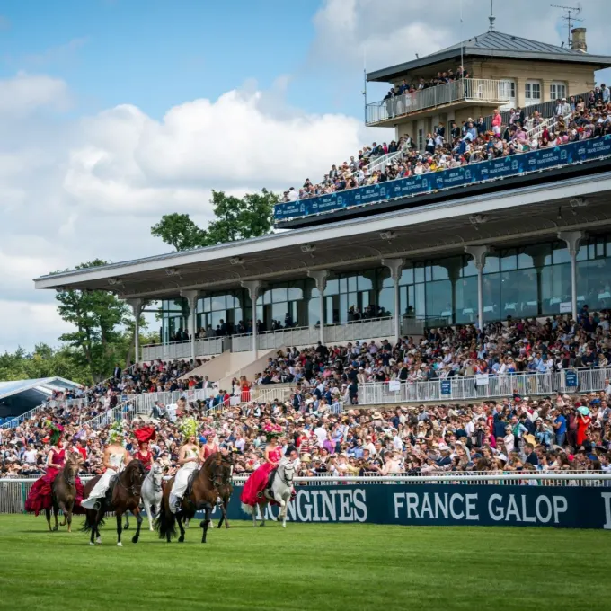

Fútbol
Balonmano
Baloncesto
Natación
Tenis
Golf
Inicio
DEPORTES
The Amundi Evian Championship

© The Amundi Evian Championship — Un torneo que se juega en Evian-les-Bains, en la región de Auvernia-Ródano-Alpes.
Del 27 al 30 de julio de 2023
Maratón de París

© snaptitude / Adobe Stock — El Maratón de París por la orilla del Sena, con la vista puesta en la Tour Eiffel.
Del 27 al 30 de julio de 2023
Premio Diane Longines, en París

© Scoopdyga — Premio de Diane Longines, en el hipódromo de Chantilly.
Junio 2024